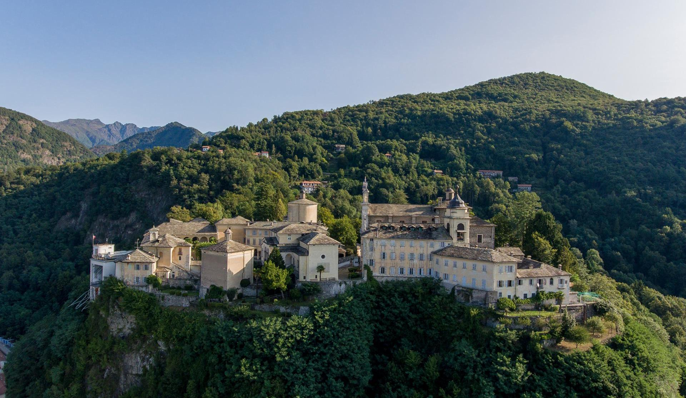
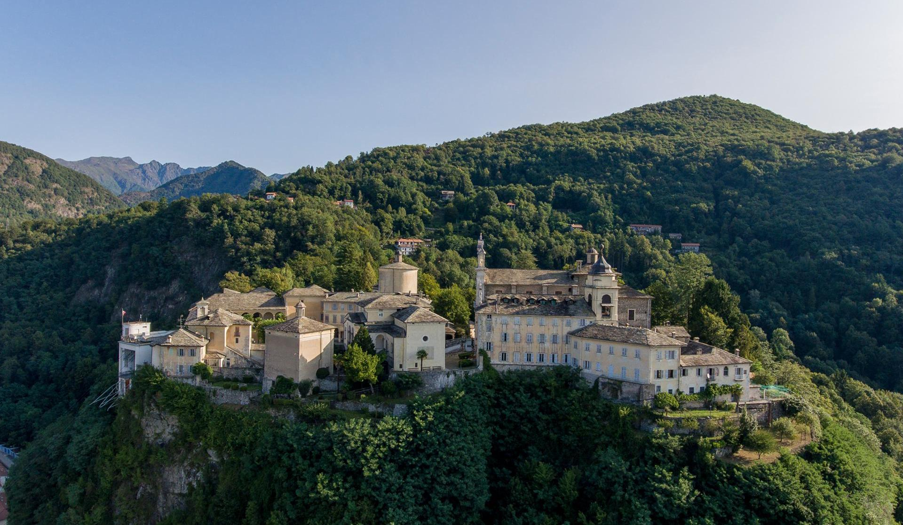

Tadpole
ABOUT THE PROJECT
Tadpole is a project that explores the problems affecting
the DATA economy and how its mechanism may ruin the user experience in digital straming platforms.
ROLE
User needs analysis
Branding
UI/UX Design
Video Editing
[Problem Finding, Branding, UI/UX Design, Video]


 
